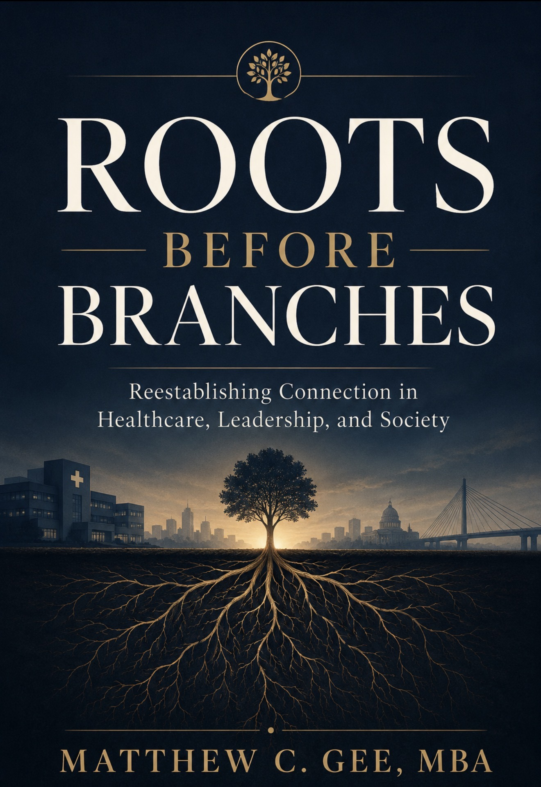

Featured · Book 1The Roots Before Branches Series — Book One
Roots Before Branches
Reestablishing Connection in Healthcare, Leadership, and Society
We have never been more connected, yet loneliness, burnout, anxiety, and emotional exhaustion continue to rise. Something essential is being lost, and you can feel it.
In Roots Before Branches, Matthew C. Gee explores the deeper patterns beneath the crises overwhelming healthcare systems, workplaces, families, schools, and communities. The behavioral health challenges flooding emergency departments, the workforce instability draining organizations, the emotional fragmentation quietly reshaping childhood development — these are not separate problems. They are signals of a society slowly drifting from the foundational human connections that once built resilience, accountability, empathy, and belonging.
Drawing on years of experience in healthcare operations, behavioral health strategy, workforce development, and community engagement, Gee writes from the intersection where institutional pressure meets human reality — and makes the case that rebuilding connection is the most urgent leadership challenge of our time.
Pre-order links will be added here as soon as they go live — check back as Summer 2026 approaches.